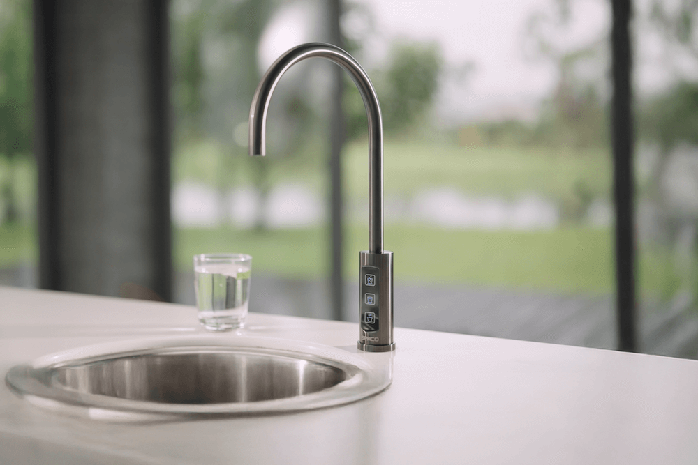

商傳媒｜記者張瑞珊／綜合報導
全台最霸氣主持人徐乃麟（乃哥）正式跨界生活家電，化身氣泡水享樂生活代言人，攜手飲水品牌領導者 日本TOYO淨水，為歡慶品牌在台服務30週年，最新飲水力作【SPACO 觸控廚下型-氣泡水冰溫熱飲水機 X-3 Pro】站台，詮釋「喝水也要喝得有品味」的新生活態度！
乃哥親自認證：「我每天的霸氣，就從這一杯開始！」
身為生活享樂大師，乃哥表示：「炎熱的天氣，在家來杯冰爽氣泡水，不只是解渴，更是一種儀式感！不只要喝得過癮，更要喝得時尚、喝得有品味！」全新升級版 SPACO 觸控廚下型-氣泡水冰溫熱飲水機 X-3 Pro，讓他每天在家就能體驗如高級五星飯店般的氣泡水饗宴。他笑說，「霸氣生活，就是要從喝水開始升級！」
TOYO再創話題，全能氣泡水飲水機以時尚美型設計成為居家美學指標
日本TOYO淨水 SPACO系列新一代商品 觸控廚下型-氣泡水冰溫熱飲水機 X-3 Pro，以「 The Taste of Galaxies 」成為頂級居家·吧檯氣泡水機 歐美品味人士熱銷首選。
X-3 Pro 主打一機三效，不只是飲水機，更是打造質感生活的秘密武器，無論是冰爽氣泡水、甘淨常溫水，或隨時沖泡熱飲的定溫熱水，都能即按即享受，在家自製冰氣泡水、氣泡特調，成為夏季居家最實用也最有型的生活必備品，輕鬆升級你的喝水日常。
六大亮點 享受真EASY：
- 歐式極簡觸控水龍頭，廚房升級質感吧台，兼具科技與美學
- 升級大容量 2 公升氣瓶，無須頻繁更換，暢飲不間斷
- 智慧漏水偵測與濾芯壽命提醒功能，全程守護用水安全
- 水質通過國家級24項飲用水檢測，喝得安心
- 熱水定溫技術，溫度不遞減，適合沖泡茶飲與咖啡
- ESG永續亮點為地球多一分友善，能源效率二級省電
隨時享受極爽 5℃ 冰氣泡水，X-3 Pro 為你的質感生活升級！
無論是一個人的me time療癒時光，還是與家人朋友的居家派對，X-3 Pro 都能完美融入每一刻，讓平凡日常多一點儀式感、多一點沁涼愉悅。喝水，也要喝得有品味又健康。
喝得時尚又安心 日本TOYO淨水以技術力守護每一口水
TOYO東洋歐帝克股份有限公司自1995年創立以來，以「A Healthy Choice For Family」為品牌核心，專注於日本鹼性離子水健康飲水機及各式高品質飲水設備，擁有 65 年日本製造技術背景，在台灣深耕服務 30 年，累計超過 17 萬戶使用者，並建立超過 350 間經銷服務據點。
日本TOYO淨水 不只是提供產品，更以生活品質守門人的角色，提供以下全方位服務：
- 飲水規劃 : 居家健康飲水機/氣泡水機/淨水器/熱飲機/雙溫機/三溫機/全戶淨水
- 健康系列日本製造/ 淨水系列台灣製造
- 各項國家級檢測通過
除了帶給使用者優質飲用水體驗，也積極推動減塑環保。X-3 Pro 所使用的氣泡水系統，能大幅降低瓶裝水使用，共同守護永續環境。
不只是飲水設備，是風格生活的象徵
SPACO 觸控廚下型-氣泡水冰溫熱飲水機 X-3 Pro 不僅是家電，更是「生活態度」的延伸。日本TOYO淨水以創新科技與設計美學，打造出的頂級機種，重新定義居家飲水標準。
正如乃哥所說：「霸氣，不只是表現，而是選擇的生活方式。」從今天開始，讓每一口水不再只是解渴，而是展現品味的生活儀式。
品牌官網：https://www.toyo-autech.com.tw/web/spaco-x-3-pro.html
販售通路：全國電子全台門市、TOYO原廠授權經銷商
檔期優惠：為歡慶日本TOYO淨水在台服務30週年，推出頂級旗艦款-SPACO 氣泡水冰溫熱飲水機 X-3 Pro，上市優惠8折起，更多好康歡迎洽詢各大通路。
新聞來源 : Yahoo！新聞https://pse.is/7rna3n